A PAGE FROM THE NOTEBOOK
【数字で見る】ふるさと納税は結局いくら得する？
#お金#税金#ふるさと納税IN THIS NOTE
この記事でわかること
ふるさと納税とは
ふるさと納税は、応援したい自治体を自分で選んで、寄付をする制度です。自分のふるさとでなくてもかまいません。
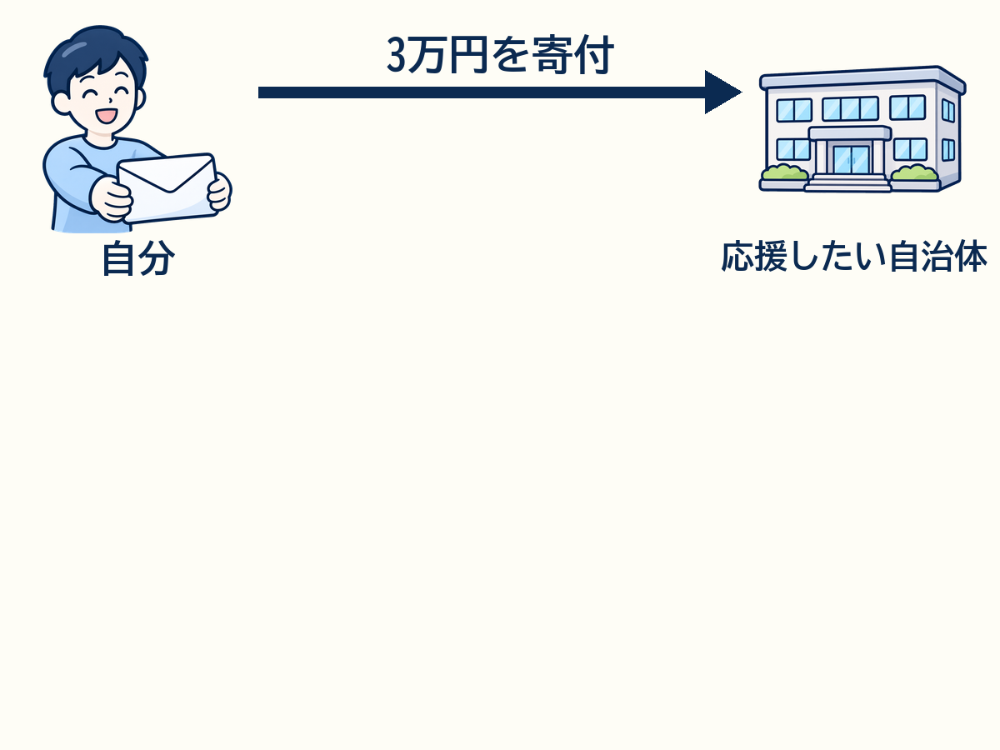
寄付をすると、お礼として、肉や米などの返礼品が届きます。返礼品は、国の決まりで寄付額の3割までです。
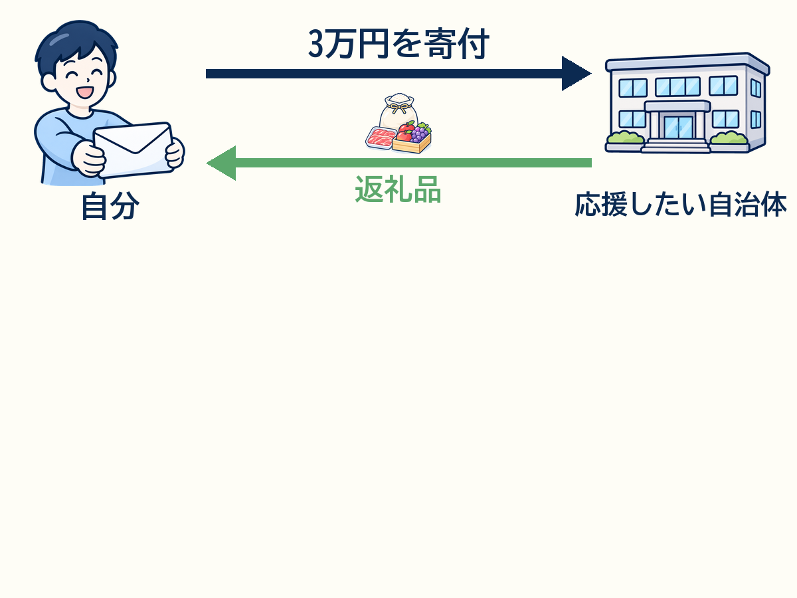
上限までなら、寄付額から2,000円を引いた分だけ、所得税や住民税が減ります。つまり、2,000円の負担で、返礼品がもらえる仕組みです。
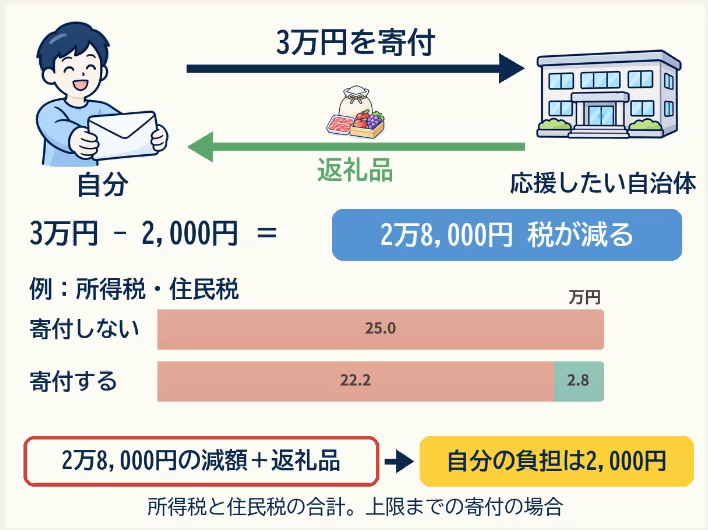
控除の仕組みと2,000円の意味
ふるさと納税は、自治体への寄付を税の控除につなげる仕組みです。寄付そのものは税金ではありません。国税庁の説明（2026年4月1日現在の法令に基づく）では、控除は3つに分かれます。1つ目は所得税です。寄付額から2,000円を引いた額を所得から差し引きます。ただし、差し引ける寄付額は総所得金額等の40%が上限です。2つ目は住民税の基本分で、寄付額から2,000円を引いた額の10%を税額から差し引きます。3つ目は住民税の特例分で、同じ額に「100%−10%−所得税率」を掛けた額を差し引きます。ここでの所得税率は、所得税率が0%の場合を除き、復興特別所得税を加えた率を使います。
3つを合わせると、上限の内側なら2,000円を超える部分がすべて控除されます。所得税と住民税の額は控除で減りますが、寄付したお金と控除後の税を合わせた支出は、全額控除の条件を満たした場合で、利用しない場合より2,000円増えます。その代わりに返礼品を受け取ります。そのため個人の得は、返礼品が本人にとってどれだけの価値を持つかで決まり、その価値から2,000円を引いた差額になります。
上限を決めるのは特例分です。特例分には「住民税所得割額の2割まで」という枠があります。この枠を超えた部分は特例分で埋められないため、自己負担が2,000円を超えます。一方、所得税の控除と住民税の基本分は、それぞれの対象額の上限内で「寄付額−2,000円」を基に計算されます。特例分の枠を超えても、これらの控除は残り得るということです。これは計算式からの読み取りで、国税庁のページには超過時の扱いが書かれていません。具体的な額は自治体のシミュレーターや税務窓口で確かめるのが確実です。
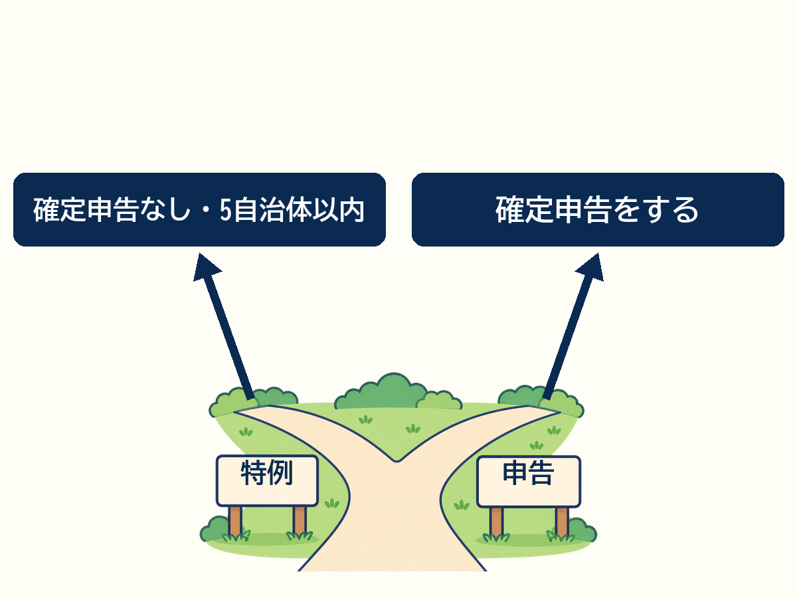
手続きは2通りあります。ワンストップ特例は、確定申告も住民税の申告も必要ない人が対象で、寄付先が年5自治体以内であることが条件です。同じ自治体に複数回寄付しても1か所と数えます。申請書は寄付の翌年1月10日（必着）までに寄付先へ出します。この特例を使うと所得税からは控除されず、その分も含めた全額が寄付の翌年度の住民税から差し引かれます（江戸川区のページ、2026年2月3日更新）。医療費控除などで確定申告をすると特例は無効になり、すべての寄付を申告に含めます。どちらの手続きでも、控除が反映されるのは寄付より後になるため、資金計画にはその時間差を入れておく必要があります。
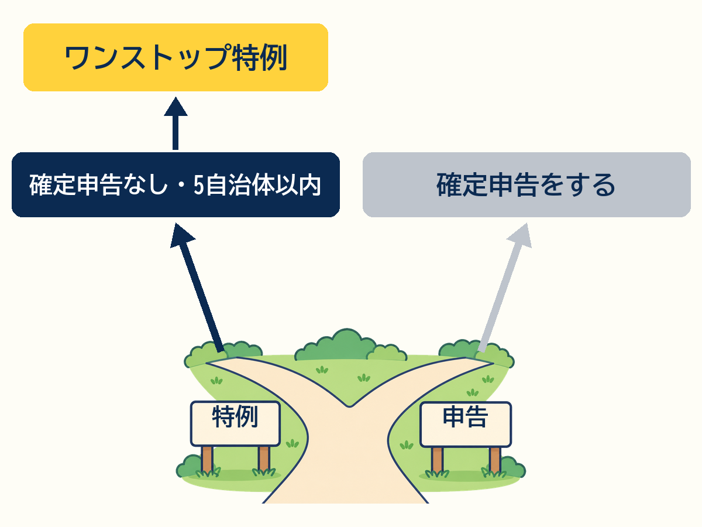
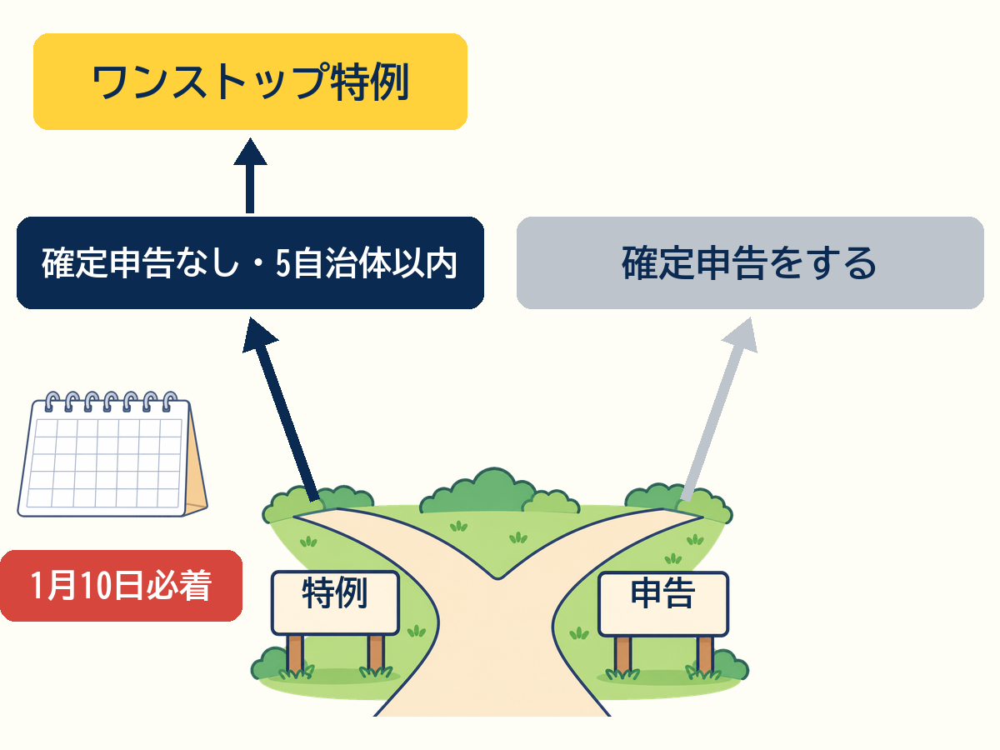
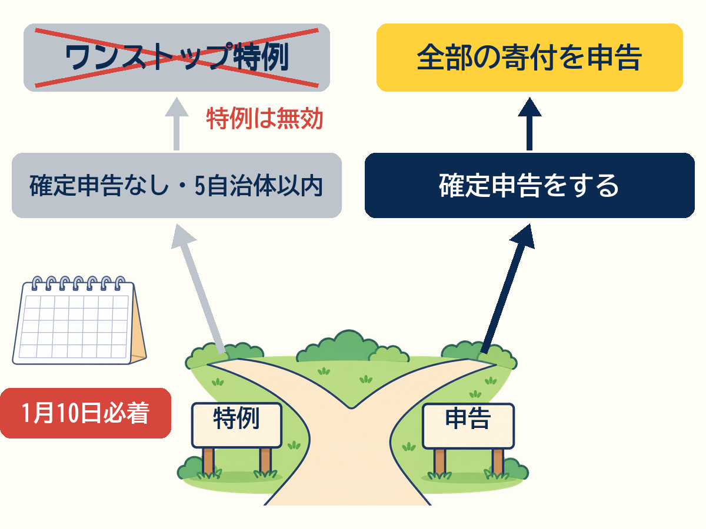
年収別の上限と実質利益の試算
控除の上限は、本人の給与収入と家族構成で変わります。ふるなびの早見表（2025年11月時点の総務省情報に基づく）は、住宅ローン控除や医療費控除などを受けていない給与所得者で、社会保険料を給与収入の15%と仮定した目安です。「独身又は共働き」の列の「共働き」は、配偶者の給与収入が201万円以上で、本人が配偶者控除を受けていない場合を指します。この列では、年収300万円で2.8万円、400万円で4.2万円、500万円で6.1万円、700万円で10.8万円、1000万円で18万円です。配偶者控除を受けている夫婦の列では、300万円で1.9万円、500万円で4.9万円、1000万円で17.1万円です。
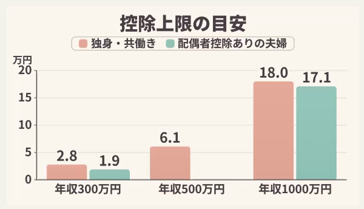
これを得に換算します。指定制度では、返礼品は寄付額の3割以下と定められています（2019年6月1日開始）。ここでは仮に「本人にとっての返礼品の価値＝寄付額の3割」とし、上限いっぱいまで寄付した場合を計算します。独身・共働きの列では、300万円が8,400円−2,000円で約6,400円、400万円が約1.06万円、500万円が約1.63万円、700万円が約3.04万円、1000万円が約5.2万円です。配偶者控除ありの夫婦では、300万円が約3,700円、500万円が約1.27万円、1000万円が約4.93万円です。
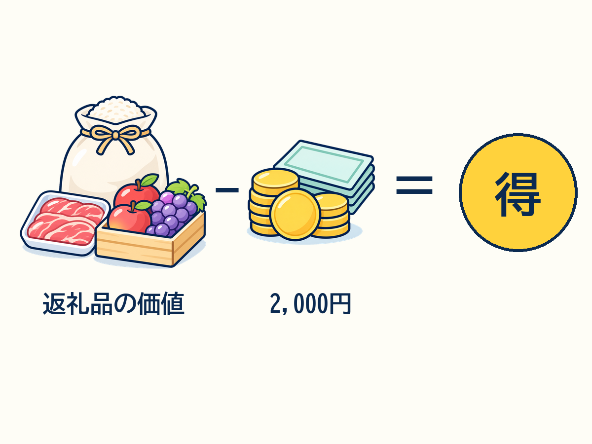
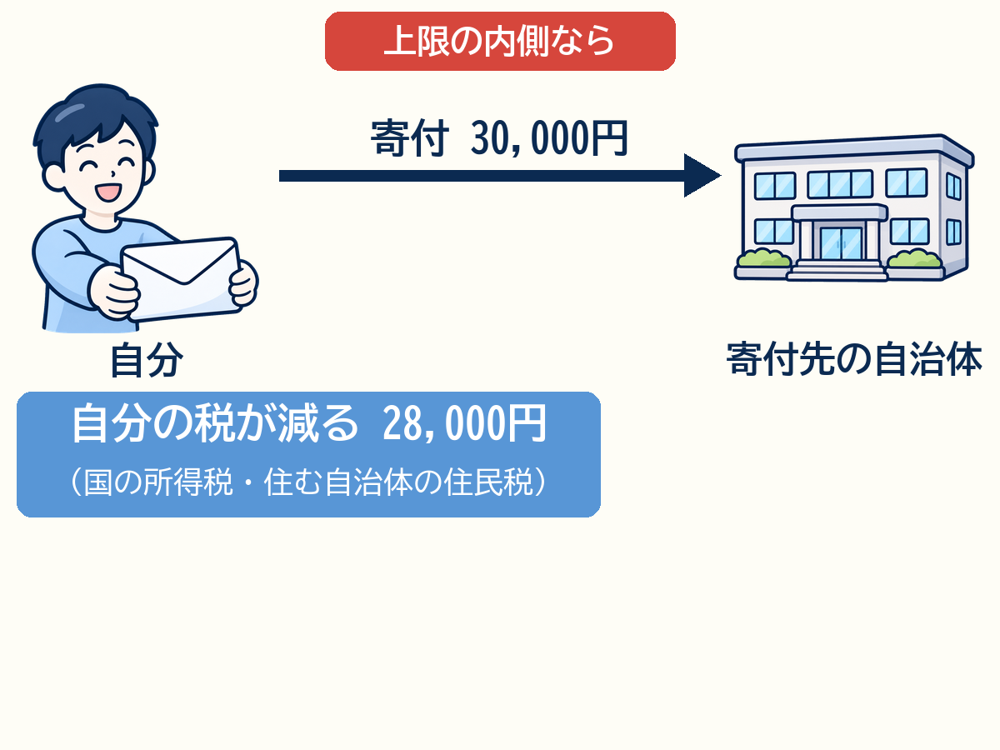
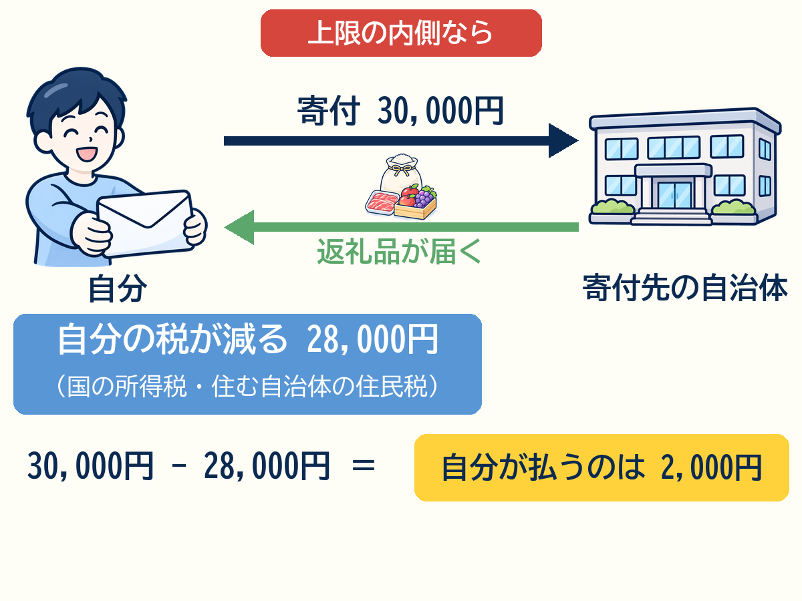
例えば年収300万円なら、上限2.8万円の3割で8,400円です。そこから2,000円を引いて、約6,400円の得になります。
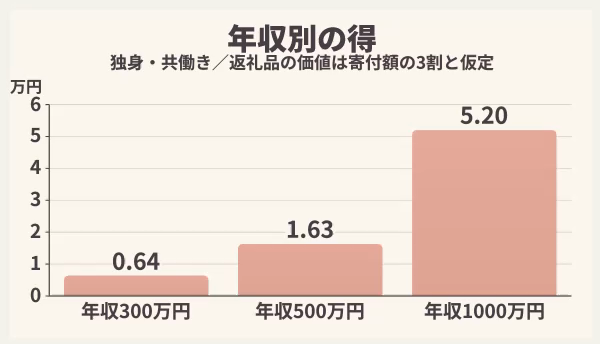
この条件で年収300万円と1000万円を比べると、試算上の利益は約8.1倍です。理由は2段階に分けられます。まず上限そのものが約6.4倍です。そこから固定の2,000円を差し引くため、上限の小さい人ほど利益が大きく削られ、倍率がさらに広がります。上限が年収の伸び（約3.3倍）以上に増える背景には、控除後の所得に応じて増える住民税所得割額や、所得税率の違いが関わると考えられます。ただし、どの要因がどれだけ効いているかは、この表からは分けられません。
この試算には限界があります。3割は基準上の上限で、実際の返礼品の割合がそれより低い品もあります。基準の割合と、店頭価格や本人にとっての価値も一致しません。普段買う食品や日用品を選べば家計の節約になりやすく、なくても困らない品なら得は試算より小さい、というのは筆者の考察です。早見表も、医療費控除などほかの控除があれば変わる目安にすぎません。また試算は、返礼品の受け取りで追加の税負担が生じないことを前提にしています。
ふるさと納税のやり方は5つの手順
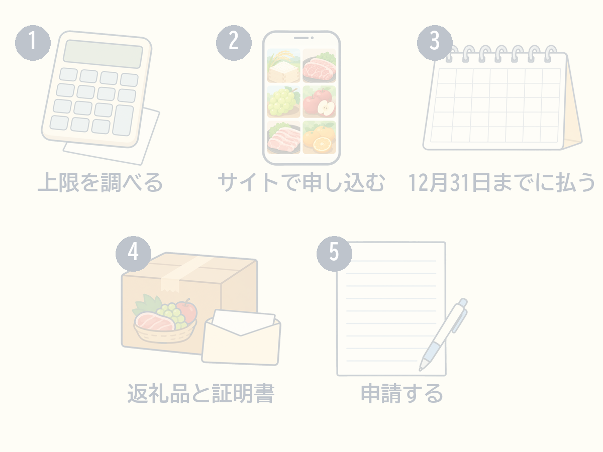
1つ目に、自分の年収と家族の形で、控除の上限を調べます。
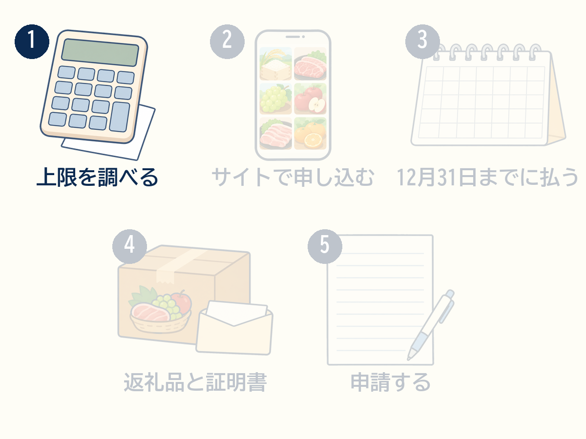
2つ目に、ふるさと納税のサイトで返礼品を選び、自分の名前で申し込みます。
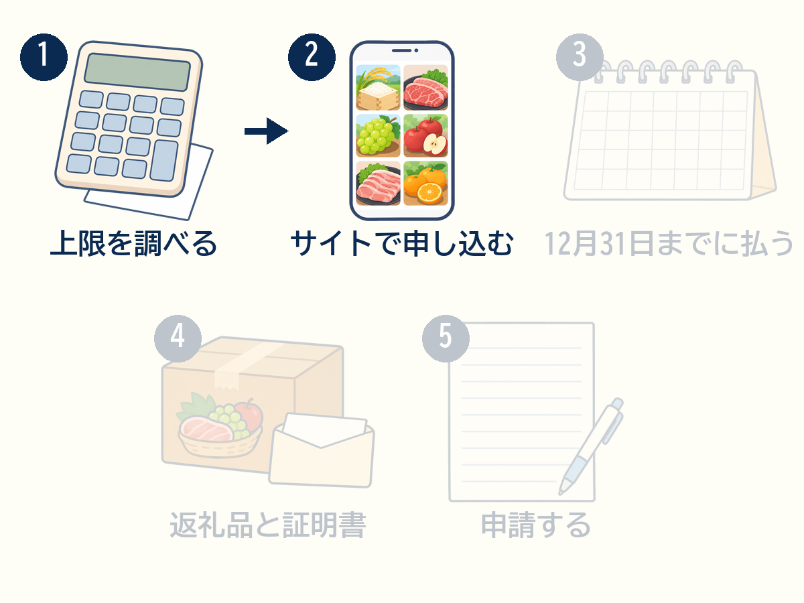
3つ目に、その年の分にするには、12月31日までに支払いを済ませます。
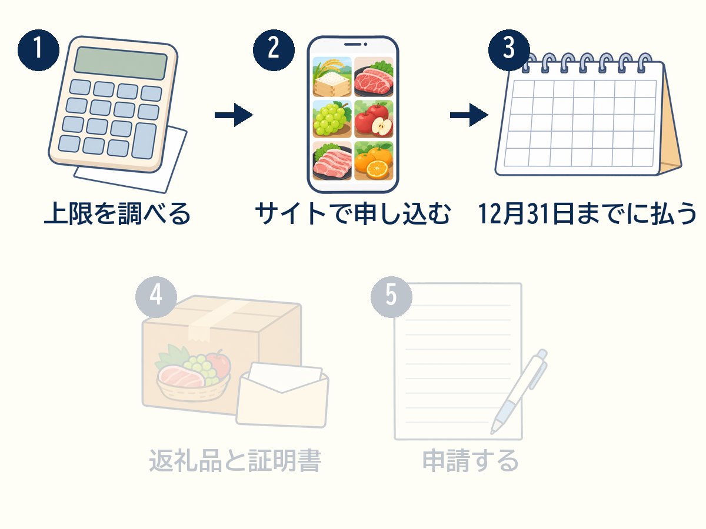
4つ目に、返礼品と、寄付の証明書が届きます。
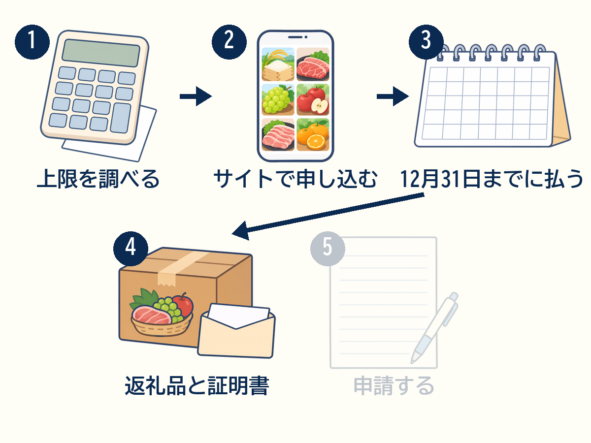
5つ目に、ワンストップ特例か確定申告で申請すると、税が減ります。
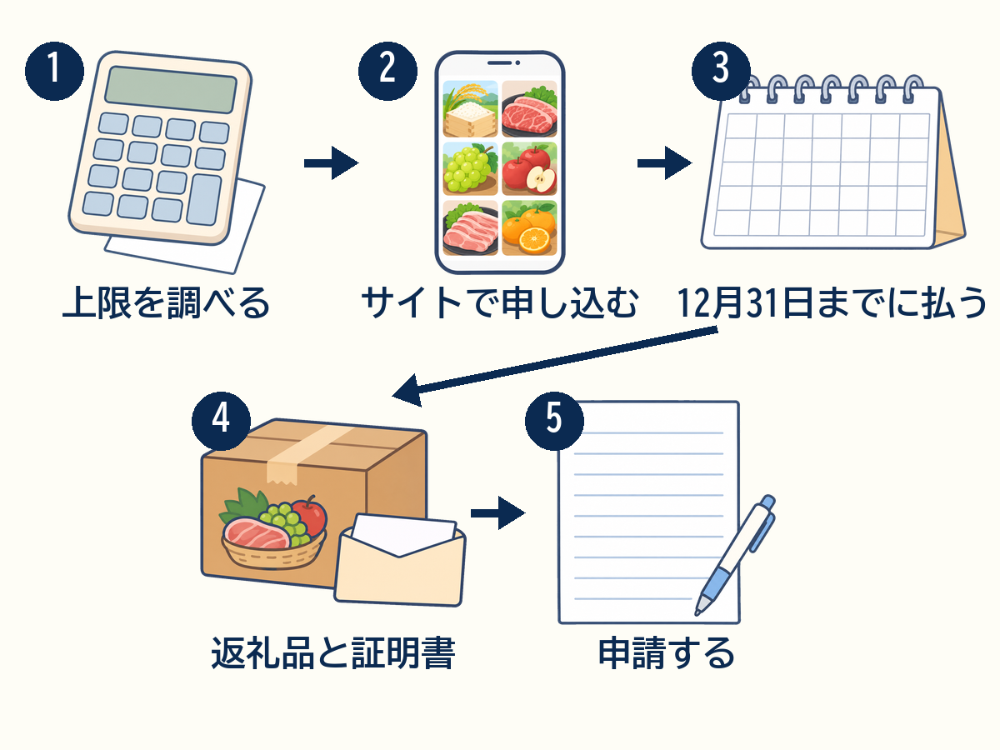
全体の収支から見た個人の得
制度の規模は広がっています。総務省の公表をまとめた資料によると、2025年中の寄付額は1兆3,314億円（前年比4.6%増）、件数は5,963万件でした。2026年度の住民税控除額は9,524億円（同9.0%増）、控除を受けた人は1,151万人（同6.5%増）です。控除を受けた人の53.3%がワンストップ特例を使っていました（2026年6月1日時点）。
寄付額のかなりの部分は経費に回っています。共同通信の報道（2026年6月12日）によると、会計検査院の調べでは、2024年度の寄付総額1兆2,728億円に対して募集経費は5,901億円でした。寄付額、住民税の控除、募集経費を合わせた自治体全体の収支への影響は、2024年度で863億円のマイナスです。2022年度は580億円、2023年度は1,060億円のマイナスでした。この数字は年度ごとの自治体財政への影響で、社会全体の損失額ではありません。
個人の得は、寄付金のうち返礼品に使われた部分から生まれます。その裏側では、住民が多く寄付する自治体の住民税が減り、仲介や配送などの経費もかかっています。個人の試算で年1万円台の得が出ても、それはこうした負担と表裏の関係にあります。
ただし、寄付を受ける自治体では収入が増えており、全体の収支だけで個人の利用の良し悪しは決まりません。個人にとっては、得の大きさと、寄付先を選べる意味をどう評価するかの問題です。
2026年以降の改正で得はどう変わるか
2026年10月1日以降の寄付から、自治体側のルールが変わりました。楽天ふるさと納税の告知によると、経費の割合は2029年までに段階的に4割以内へ抑えられます。あわせて、返礼品の価値の過半が地域内の工程で生まれたことの証明と公表、1支払先あたり100万円以上の募集費用（ポータルサイトへの手数料を含む）の公表が求められます。控除の仕組みそのものは変わらないとされています。
これまでの基準は、返礼品が3割以下、募集費用が5割以下、返礼品は地場産品に限る、というものでした。経費の枠が4割へ縮むと、自治体は返礼品の費用、送料、仲介手数料、事務費の配分を見直すか、業務の効率化で吸収することになります。告知が示しているのは、返礼品の取り扱い終了や、寄付額・内容量の変更が「起こり得る」という可能性です。どの費目をどれだけ削るかは自治体によって違うため、返礼品や利益が一律に悪くなるとは言えません。
高所得者向けには、住民税の特例控除額に定額の上限を設ける内容が、令和8年度税制改正として解説されています。山田・パートナーズによると、上限は道府県民税77.2万円と市町村民税115.8万円（指定都市なら38.6万円と154.4万円）の合計193万円です。これは寄付額や控除総額の上限ではなく、特例控除額の上限です。2028年度以後の住民税に適用され、2027年中の寄付から関係するとされています。本調査では法令の本文でこの内容を確かめられていないため、ここでは解説に基づく参考情報として扱います。
同じ解説の試算では、単身で給与所得のみ、基礎控除以外の所得控除や税額控除を考慮しないという条件の下で、給与収入9,900万円前後から上限がかかり始めます。事業所得や株式の譲渡益がある人や、ほかの控除がある人は、境目が変わり得ます。早見表の範囲（年収1000万円で上限18万円）の人には、この上限は直接影響しないと考えられます。
結論
全額控除で追加課税がなければ得は返礼品の価値−2,000円。価値を寄付額の3割と仮定すると年収300万円約6千円、1000万円約5.2万円（独身）。改正で一律に減るとは確認できず。
見解
【事実】全額控除の範囲なら、寄付と控除後の税を合わせた支出は利用前より2,000円増え、その代わりに返礼品を受け取る。ワンストップ特例では、全額が翌年度の住民税から差し引かれる。上限の目安は、独身・共働きで年収300万円なら2.8万円、1000万円なら18万円。2026年10月から経費のルールが厳しくなった。【試算】返礼品の価値を寄付額の3割と仮定すると、得は年収300万円で約6千円、1000万円で約5.2万円で、この2点の比は約8.1倍になる。上限の差に加えて固定の2,000円が効くためで、一般化はできない。3割は基準上の上限であり、本人にとっての価値ではない。【見解】次の条件がそろえば有利な制度だと考える。返礼品の本人にとっての価値が2,000円の負担を上回ること、手続きを確実にできること、上限の内側に収まること、控除の反映まで資金を待てること。逆に、上限を把握しにくい人や不要な品を選ぶ人には得が小さい。【推測】経費上限の引き下げは返礼品の縮小につながり得るが、送料や手数料の削減で吸収される場合もある。いま寄付するなら、改正後の現在の寄付額と内容量を比べて選ぶのがよい。193万円の上限は解説段階の確認にとどまる。